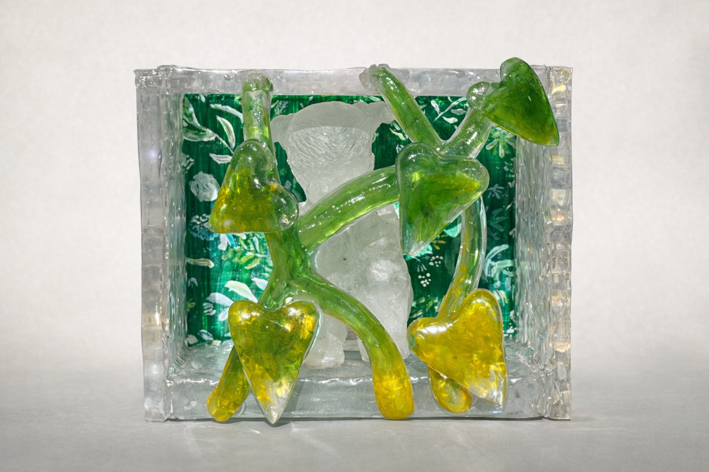

Solitude
Resin, acrylics on wood
6” x 5” x 4"
2025

Solitude is a resin sculpture enclosing a small frosted figure within a clear rectangular box. Around her, green and yellow resin vines grow outward in every direction beyond the frame.
The box is not a cage. It is the symbolism of being alone with oneself. The vines do not escape the enclosure so much as fill it, the way thoughts do during long periods of stillness. Growth here is slow, lateral, searching — the kind that happens when there is nothing else to do but tend to yourself.
There is a quality to solitude that only reveals itself in retrospect. The periods of stillness that felt like interruptions often turn out to be the moments that changed everything. Solitude is about that lag between the quiet and the growth, and the trust it takes to sit inside one without yet seeing the other.